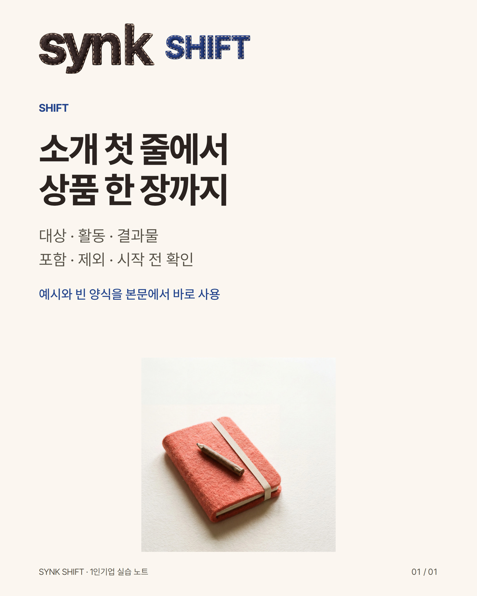

Naver Blog · SYNK SHIFT 네이버 블로그 · 주소 미확정
1인 기업 소개문 쓰기: 대상·활동·결과물에서 상품 범위까지
준비 계정 · 실제 계정/핸들 확인 전 · 로컬 제작본 · 미게시

이 계정에 올릴 본문
가져가는 도움
1인 기업 소개문·상품 범위 실습
글 안의 여섯 빈칸을 내 상품 하나로 채워보세요.
긴 글 · 원문
혼자 일을 설명하다 보면 소개문에 경력, 철학, 서비스 목록이 한꺼번에 들어갑니다. 정작 처음 보는 사람은 자기에게 필요한 일인지 판단하기 어려울 수 있습니다. 오늘은 소개 첫 문장을 쓰고, 실제 상품 범위까지 한 장에 정리해보겠습니다.
이 글은 1인 기업 교육용 실습입니다. 예시는 가상의 휴대폰 촬영 강사이며 실제 고객 사례, 판매 성과, 모집 중인 상품을 뜻하지 않습니다. 계약·세무·법률 상담도 아닙니다.
- 나의 평가 대신 상대의 상황을 적기
‘최고의 노하우를 가진 전문가’라는 말보다 누가 언제 이 도움이 필요한지 먼저 써봅니다. 넓은 대상: 수공예 판매자 상황을 더한 대상: 새 제품 사진을 혼자 준비하는 수공예 판매자
너무 좁게 확정할 필요는 없습니다. 먼저 하나의 장면으로 써보고 실제 고객에게 맞는지는 확인해야 합니다. 내가 돕고 싶은 사람이 이 일을 필요로 하는 순간: ______
- 활동을 동사로 쓰기
‘브랜드를 완성한다’는 말만으로는 무엇을 하는지 알기 어렵습니다. 가상 촬영 실습의 활동은 ‘제품 하나를 놓고 빛과 배경을 바꿔 촬영하기’입니다. 내가 실제로 함께 하는 활동: ______
직접 수행, 설명, 연습, 검토는 서로 다른 도움입니다. 설명만 제공하는데 개별 수정까지 해주는 것처럼 쓰지 않습니다.
- 남는 것을 눈에 보이는 형태로 적기
가상 실습에는 ‘비교할 사진 세 컷’이 남습니다. 사진으로 판매가 늘어난다는 약속은 아닙니다. 다른 예시로는 소개문 초안, 상품 범위 한 장, 스스로 확인할 질문 목록이 있습니다. 내 서비스에서 실제로 만들어지는 것만 적습니다. 끝에 남는 것: ______
소개 첫 문장 [대상]이 [활동]을 해보고 [결과물]을 남기는 [실습/서비스]입니다.
가상 완성 예시 새 제품 사진을 혼자 준비하는 수공예 판매자가 휴대폰으로 빛과 배경을 바꿔 찍고, 비교할 사진 세 컷을 남기는 실습입니다.
- 상품의 경계도 같은 장에 적기
소개가 선명해져도 범위가 모호하면 서로 다른 기대가 생길 수 있습니다. 포함하는 도움: 실습 순서와 스스로 점검할 질문 포함하지 않는 일: 상품 대신 촬영하기, 판매 성과 보장 시작 전 확인: 본인 제품 사진을 사용할 권한, 촬영할 공간
위 항목은 가상 예시의 조건입니다. 실제 운영하지 않는 내용을 그대로 상품 안내에 쓰지 마세요.
복사해서 쓰는 상품 한 장 대상: ______ 활동: ______ 남는 것: ______ 포함: ______ 제외: ______ 시작 전 확인: ______
- AI로 다듬을 때 지킬 한 가지
직접 적은 사실을 원자료로 두고, AI에는 문장을 정리하게 합니다. 없는 경험이나 지원 조건을 메우도록 맡기지 않습니다. 복사용 요청: “아래 원자료 안에서 소개문을 정리해 줘. 없는 경력·성과·가격·지원 조건은 만들지 마. 원문과 수정문, 바꾼 이유를 함께 보여 줘. 확인할 수 없는 내용은 질문으로 남겨 줘.”
공개 가능한 가상 자료부터 시험하고, 고객명·연락처·계약서·비공개 사업자료는 넣지 않아도 됩니다. AI가 정리한 뒤에도 사람이 원자료와 한 줄씩 대조합니다.
마지막 점검 이 소개가 필요한 사람이 자기 상황을 알아볼 수 있나요? 실제로 함께 하는 활동과 남는 것이 구분되나요? 포함과 제외가 실제 제공 범위와 맞나요? 없던 성과나 경력이 새로 들어가지는 않았나요?
오늘 한 번에 홈페이지 전체를 바꾸지 않아도 됩니다. 소개 첫 문장 하나와 상품 범위 여섯 칸을 자기 메모에 남겨보세요. 외부 자료를 열거나 댓글을 남기지 않아도 이 글 안에서 끝낼 수 있습니다.
게시 준비
Naver Blog · SYNK SHIFT 네이버 블로그 · 주소 미확정
1인 기업 소개문 쓰기: 대상·활동·결과물에서 상품 범위까지
- 게시 순서 추천: 16
- 계정 상태: 준비 계정 · 실제 계정/핸들 확인 전
- 원고 언어: 한국어. 실제 반응/사업 효과 미측정.
- 받는 사람: 지식·서비스를 혼자 운영하거나 준비하는 성인. 한국어 독자를 1차 권장 대상으로 편집했으며 시장 검증 완료 주장은 아님.
- 이 게시물에서 가져갈 것: 1인 기업 소개문·상품 범위 실습
- 사용 파일: 번호순 upload-01.jpg부터 사용합니다.
- 이미지 규격: 1080×1350 (4:5). master는 가로2160px의 보관 원본.
- 게시 본문: 게시문안.txt (복사할 공개 문장만). 긴 글은 본문.md.
- 끝맺음: 자료가 없어도 본문 속 팁으로 한 번 실행할 수 있습니다. 자료 링크는 실제 공개 후 열리는 주소를 확인한 경우에만 추가합니다.
- 본문 링크: YouTube Shorts 설명·댓글 URL은 클릭을 기대하지 않습니다. 같은 채널의 관련 영상 연결 조건은 전체 업로드조건 문서 참조.
- 추가 자료: ../제공자료/ 에 PDF와 수정 가능한 MD가 있습니다. 파일 첨부 지원 플랫폼에서만 올리세요.
- 대화: 댓글답변.md는 참고 예시. 실제 질문과 맞는지 확인 후 수동 답변합니다.
- 원본 계승: 이번 신규 제작.
- 이번 작업은 제작·로컬 검수입니다. 외부 게시/계정 생성/광고 집행/자동 DM은 하지 않았습니다.
전체 세부 조건: ../_검토/업로드조건.md